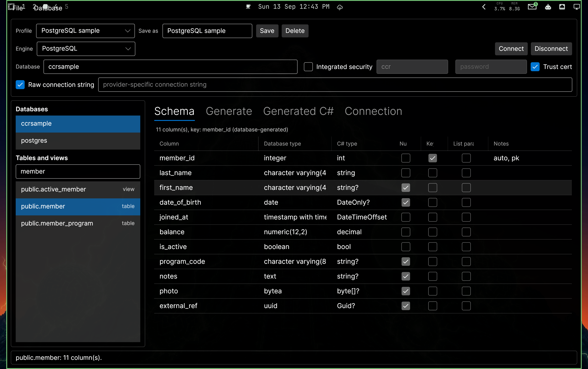
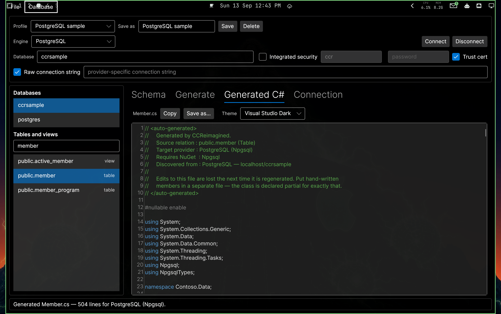
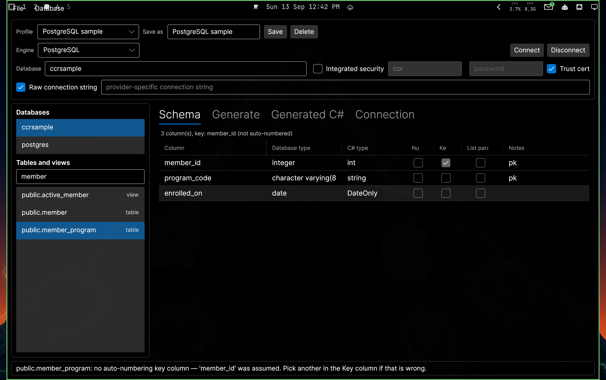

The CodeComplete data-class generator, rebuilt for macOS, Windows and Linux —
and no longer tied to SQL Server.
Point it at a table on any of five database engines and it writes the same data-abstraction
class you have been using for years. The shape of that class never changes. What changes is
everything underneath it: the client library, the parameter types, the SQL quoting, and the
way a new row's key comes back.
This guide shows the tool running against live PostgreSQL and SQL Server instances, and puts
the generated output for the same table side by side across all four engines so you can see
exactly what stays the same and what adapts.
EnginesSQL Server · PostgreSQL · Oracle MySQL / MariaDB · SQLite
Runs onmacOS, Windows, Linux Avalonia, .NET 10
ReplacesTAICodeComplete (WinForms, SQL Server only)
RepositoryHarlock123/CCReimagined private
Every screenshot and code excerpt in this guide was produced from live servers —
PostgreSQL 18.6, MySQL 8.4, MariaDB 11.8, SQL Server 15.0, Oracle 23ai and SQLite 3.53 — not
written by hand.
What it does, and what has changed
The job is the same as it always was. You choose a table or view; the tool reads its columns
from the database catalog and writes a partial C# class with a property per
column and a full set of CRUD methods. You still choose which column is the key, and which
columns become parameters on the list getters.
Three things are different:
It runs natively on macOS, Windows and Linux. The WinForms original ran on Windows only.
It speaks five engines, and the code it writes targets whichever one you point it at.
The engine you browse and the engine you emit for are separate choices. Read a SQL
Server schema, emit an Npgsql class. That is what porting a table between engines needs.
Five minutes to your first class
Pick the engine and fill in the server, database and credentials. Press Connect.
For PostgreSQL, untick Integrated security first — it is ticked by default
because peer authentication is its equivalent, and while it is ticked no password is sent.
For Oracle, the Database field is a service name such as FREEPDB1,
not a schema; the rail then lists schemas, and picking one filters rather than reconnects.
Press Save with a name. The connection comes back next launch. The password is
never written to disk, so that one field is retyped.
Pick a table or view from the list. Type in the filter box to narrow it.
Check the key column in the grid. The tool picks one and tells you how confident it
is; the tick is yours to move.
Tick any columns you want a GetListBy… method for.
Generate class. The output tab comes forward. Copy, or Save as… into your project.
Connecting

Connected to a live PostgreSQL 18 instance. The left rail lists databases, then tables and
views; the grid is the discovered schema for public.member, all eleven columns.
The column that matters most is C# type, which is where the next page starts.
The generated code is database-type aware
Every provider maps its own native type names onto one neutral set of CLR types during
discovery. That mapping is what you see in the C# type column, and it is what the
generated properties are declared as.
C# property
SQL Server
PostgreSQL
MySQL
SQLite
Oracle
int / long
int, bigint
integer, bigint
INT, BIGINT
INTEGER
NUMBER(5..18,0)
string
nvarchar, varchar, text
varchar, text, json
VARCHAR, TEXT, JSON
VARCHAR, TEXT, CLOB
VARCHAR2, CLOB
decimal
decimal, money
numeric, money
DECIMAL
DECIMAL
NUMBER(p,s)
bool
bit
boolean
TINYINT(1)
BOOLEAN
NUMBER(1)
DateOnly
date
date
DATE
DATE
—
DateTime
datetime2
timestamp
DATETIME
DATETIME
DATE, TIMESTAMP
DateTimeOffset
datetimeoffset
timestamptz
—
—
TIMESTAMP WITH TIME ZONE
Guid
uniqueidentifier
uuid
CHAR(36)
GUID
—
byte[]
varbinary, image
bytea
BLOB
BLOB
BLOB, RAW
Nullability is carried through, not guessed
A nullable column becomes a nullable property — string?, DateOnly?,
decimal?. The classes the old tool wrote used sentinel values instead
("", a minimum date), so "not set" and "legitimately empty" were
indistinguishable once the row came back. They are distinguishable now.
The same column, four engines
date_of_birth is declared date on PostgreSQL and SQL Server,
DATE on MySQL, and DATE on SQLite. In all four the property is
identical, and only the parameter type differs:
SQLite stores dates as text — that is the engine's design, not a shortcut. The property is
still DateOnly?, so your code does not care.
Where Oracle differs, and why
Oracle is the one engine that does not line up exactly, in two visible ways. Neither is the
generator taking a liberty; both follow what the database reports.
The name is upper case. Oracle folds an identifier written without quotes, so the
column really is DATE_OF_BIRTH in the catalog. The property follows the
database rather than inventing a spelling.
The type is DateTime?, not DateOnly?. An Oracle
DATE carries a time component, so it is not a date-only value.
Parameters bind with a colon. That is Oracle's sigil, not an at-sign.
The patterns are identical across every engine
This is the part that matters for a team. Whatever database a class was generated against,
it exposes exactly the same members, with the same names and the same signatures. Nobody has
to learn a second idiom because a project moved to Postgres.
Member
What it does
Initialize()
Resets every mapped column to its default.
CopyFields(DbDataReader)
Copies the current row in. Columns absent from the result set are left alone, so a partial SELECT is fine.
ReadAsync(id)
Loads one row by key. Returns false when there is no such row.
AddAsync()
Inserts, and reads the database-generated key back into the property.
UpdateAsync()
Writes every writable column back. Returns rows affected.
DeleteAsync()
Deletes by key. Returns rows affected.
RecExistsAsync(id)
True when a row with that key exists.
ReadAsDataTableAsync(id)
The portable replacement for the old ReadAsDataSet.
GetAllAsync(cs)
Every row, optionally row-capped.
GetListByColumnAsync(cs, value)
One per column you ticked as a list parameter.
Each async method has an optional blocking wrapper (Read, Add,
Update, Delete…) for callers that cannot await.
Checked, not asserted
Generating the same table against all five engines and comparing the public members gives
an identical list every time, with one exception that follows from the database rather than
the generator: a list getter is named after its column, so on Oracle — where an unquoted
identifier is stored upper-cased — GetListBylast_name is
GetListByLAST_NAME.
What adapts underneath
A handful of things change per engine, and nothing else:
SQL Server
PostgreSQL
MySQL
SQLite
Oracle
Client
SqlConnection
NpgsqlConnection
MySqlConnection
SqliteConnection
OracleConnection
Parameter type
SqlDbType
NpgsqlDbType
MySqlDbType
SqliteType
OracleDbType
Sigil
@name
@name
@name
@name
:name
Quoting
[name]
"name"
`name`
"name"
"NAME"
New key
SCOPE_IDENTITY()
RETURNING
LAST_INSERT_ID()
last_insert_rowid()
RETURNING … INTO
You can see all four in the INSERT statement the generator emits for the same table:
SQL Server
INSERT INTO [dbo].[member] (
[last_name], [first_name], [date_of_birth], …
)
VALUES (
@p_last_name, @p_first_name, @p_date_of_birth, …
);
SELECT CAST(SCOPE_IDENTITY() AS bigint);
INSERT INTO "CCR"."MEMBER" (
"LAST_NAME", "FIRST_NAME", "DATE_OF_BIRTH", …
)
VALUES (
:p_LAST_NAME, :p_FIRST_NAME, :p_DATE_OF_BIRTH, …
)
RETURNING "MEMBER_ID" INTO :p_generated_key
Oracle needed a third way of retrieving a new key
It has no SCOPE_IDENTITY, and no RETURNING clause that yields a
result set. The insert writes the key into an output bind variable instead, so the
generated AddAsync adds that parameter before executing and reads it after:
var generatedKey = command.Parameters.Add(":p_generated_key", OracleDbType.Int32);
generatedKey.Direction = ParameterDirection.Output;
await command.ExecuteNonQueryAsync(cancellationToken);
if (generatedKey.Value is { } returned && returned is not DBNull)
_MEMBER_ID = Convert.ToInt32(returned.ToString()!);
That is the only change any new engine has required of the generator itself. Everything
else about adding Oracle was a provider and a profile.
The SQL lives in const raw string literals at the top of the generated class, so
it is reviewable in a diff rather than assembled at runtime.
The output

The same table, generated for PostgreSQL. The header records the source relation, the target
provider and the NuGet package the file needs, so a class that turns up in a code review
explains itself. The status bar reads
“Generated Member.cs — 504 lines for PostgreSQL (Npgsql)”.
The class is partial and the header says so: regenerating overwrites the file, so
hand-written members belong in a second file beside it.
Tables the old tool refused

A composite-key table: no auto-numbering column, so the tool assumes one, says which, and
carries on — “no auto-numbering key column — 'member_id' was assumed. Pick another in the
Key column if that is wrong.” The tick is yours to move. The original stopped at a modal
dialog here.
A view generates what the database allows
A class generated from a view only gets Add, Update and
Delete when writes through that view are actually possible. The engines differ
in how they answer, and one of them answers wrongly, so each is asked in the way that is
reliable for it.
An aggregating view on Oracle. The summary line reads
“view, the database reports this view as read-only”, and the generated class comes
out without its mutating methods.
Engine
How it is determined
PostgreSQL
information_schema.views.is_updatable, plus is_trigger_updatable
MySQL / MariaDB
information_schema.views.is_updatable
Oracle
all_updatable_columns — per column, and accurate
SQLite
Read-only unless an INSTEAD OF trigger stands in; SQLite refuses writes through a view outright
SQL Server
Its IS_UPDATABLE reports NO for views that accept an UPDATE, so it is not read. A trigger proves updatability; otherwise the answer is unknown
Unknown stays generous: the methods are still generated and the doubt recorded, because
removing capability on a guess would be worse than the problem. A three-state tick on the
Generate tab overrules the database in either direction.
Worth knowing before you regenerate an old class
Some behaviours were corrected rather than carried across. If you are replacing a class the old tool wrote, expect these:
Then
Now
Nullable columns used sentinels
Nullable columns are nullable properties. Empty-string-as-NULL is still available as an opt-in.
INTERVIEWER renamed because it contains int
Reserved words are matched exactly. Only a column actually named int or class gets escaped.
Columns ordered alphabetically
Columns follow the table's declared order.
Only IDENTITY counted as generated
Also serial, AUTO_INCREMENT, and SQLite's rowid alias.
ReadAsDataSet
ReadAsDataTableAsync — not every provider ships a DataAdapter.
Synchronous only
Async throughout, with blocking wrappers kept.
Views generated like tables
A read-only view generates a read-only class.
How far it is verified
For each engine the test suite creates a table, discovers it, generates the class,
compiles that class with Roslyn, and then drives insert, key read-back, read, update,
exists, both list getters and delete against a real server. Generated code that does
not build, or does not round-trip a row, fails the build. This runs in CI against all five
engines, so it is not something that only works on one machine.
Getting the sample databases
dev/sample-databases in the repository has a Docker Compose stack for all four
engines and a schema built to exercise the awkward cases — keyless tables, composite keys,
computed columns, and column names that are C# keywords. Its README lists every connection
parameter.
Running it yourself
The repository is Harlock123/CCReimagined. You need the .NET 10 SDK and nothing else.
# build and run the app
git clone https://github.com/Harlock123/CCReimagined.git
cd CCReimagined
dotnet run --project src/CCReimagined.App
# optional: sample databases to try it against
cd dev/sample-databases
docker compose up -d # PostgreSQL, MySQL, MariaDB
./make-sqlite.sh # SQLite, no container needed
docker compose --profile mssql up -d # SQL Server (amd64 hosts)
./seed-sqlserver.sh # apply the sample schema to it
docker compose --profile oracle up -d # Oracle, native on arm64 too
./seed-oracle.sh
Shortcut
Does
Ctrl+S / Cmd+S
Save the generated class to a file
Ctrl+Q / Cmd+Q
Quit — also File › Exit
Database menu
Connect, Disconnect, Generate class
Connection profiles are stored per user — ~/.config/CCReimagined on Linux,
~/Library/Application Support/CCReimagined on macOS,
%APPDATA%\CCReimagined on Windows. Passwords are never written to disk,
including any password inside a saved raw connection string, so the file is safe to sync
between machines.